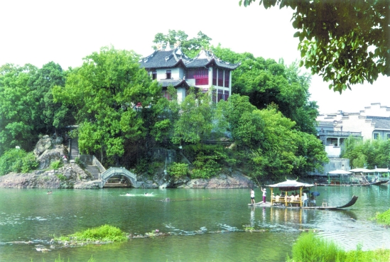
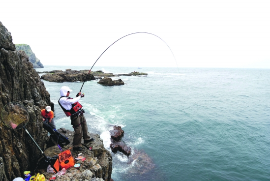

浙江宁波旅游资讯 |
2011宁波旅游节新闻宣传 成绩斐然 |
宁波：向长三角最佳休闲 旅游目的地进发 |
“宁波十大文化旅游古道”、 “鄞州区民间旅游文化使者” 评选结果揭 |
宁海两年投资20亿元做强 四大旅游板块 |
|
宁波：向长三角最佳休闲旅游目的地进发

城市的胸怀：酒香也怕巷子深
以海为伴的宁波人从不吝啬“吆喝”，“走出去”、“请进来”，用多种营销方式推荐旅游“得意之作”。
“看世博，玩转宁波”，去年宁波大胆提出这一口号，推出“九·九”攻略，把宁波打造成为“户外世博园”。这个攻略包括了宁波世博主题体验之旅九条线路、宁波对接世博旅游的九个亮点，简洁明了地列出了宁波旅游的精彩之处，可让世界各地的世博游客“按图索骥”前来宁波旅游。
借世博会机缘深度开拓挖掘旅游市场，是宁波人2010年所做的一篇大文章。但“胆大”并不意味着不需要“心细”。宁波市旅游局局长励永惠认为，要通过精准的旅游营销来做到“有的放矢”。
为此，宁波旅游部门以上海为圆心，对世博的客源市场进行了细分，先后在南京、上海、苏州、常州等地进行旅游推介，宁波的旅游宣传资料还进入上海200个社区、三星以上酒店、37个旅游咨询中心，取得了良好效果。宁波联合温州、台州、舟山、绍兴等城市共联“浙东南线路”，开展“浙东南·醉美山海”之旅，共同打造了一条中国东南沿海的黄金动车旅游线。
“借东风”，宁波旅游早已驾轻就熟。
浙台旅游合作大会、中国台湾大型旅游展览、日本“宁波周”、甬港合作论坛等等，任何一场经济活动都被宁波人牢牢抓住，不遗余力地推荐旅游品牌，还通过融入亲情、文化、美食元素，策划举办境外旅游推介活动、业内座谈会、宁波美食节、宁波旅游图片展，开展定价营销、电视购物频道直售等方式，较好地扩大了宁波旅游在港台、东南亚的影响力。在我国香港特区、台湾地区策划了“一封家书”亲情营销活动，有效拓展了“宁波帮”旅游市场。此外，媒体营销、影视营销、事件营销、亲情营销十八般武艺扩大了宁波的影响力。
除了走出去“叫卖”，宁波旅游也把贵宾“请进来”展示。
宁波旅游节、中国开渔节、中国徐霞客开游节、梁祝爱情节(活动延伸至意大利、我国台湾地区)、中华慈孝文化节、余姚国际河姆渡文化节、中国湖泊休闲节等等，一大串长长的活动日程表，把宁波的365天挤得满满的，节庆带来了一批又一批的人潮，成为宁波旅游营销的主要渠道和精美名片，拉动的旅游人次已占全市年接待量的30%以上。
推荐旅游产品，少不了旅行社的功能，宁波还鼓励和引导旅行社行业创新发展模式，“不走寻常路”。
飞扬国际旅游广场开创了行业“一站式，全透明”服务的新模式；宁波25家国内旅行社组成了“旅游博览会”联合体，5家国际组团社组成了“宁波旅游广场”联合体，规模化经营……

城市的魅力：产品提升功能完善
产品是吸引顾客的“王道”，旅游行业亦不例外。
近年来，宁波坚持以产业发展和市场需求为导向，谋划产业的空间功能布局，突出都市休闲圈的核心地位，积极推进象山港滨海休闲旅游区、四明山山地休闲旅游区、杭州湾滨海休闲旅游区、北仑港港口体验休闲旅游区四大休闲功能区块，启动休闲旅游基地建设，打造成为“一核、四区、二十大基地”的目的地产品体系。
“拥有吸引游客的旅游产品才能把人留住，没有真材实料，光靠说是不行的，旅游产品品牌的打造至关重要。”宁波市旅游局局长励永惠这样理解旅游产品的提升工程。
他说，项目的助推，就如同创作有了宣纸、画笔，品牌的打响，则为其增添了各种绚丽的色彩，经过精心描绘，一幅五彩的宁波旅游画卷展现在游客的面前——
走在城市中央，你会寻到一个幽远僻静的古藏书楼，亦或是平静淡然的月湖畔，还可能是纯朴自然的老街古寺，一切充满期待。再走深一点，三江六岸的夜景降临，老外滩、老教堂、舟宿夜江灯火初上，或奔放、或神秘、或婉转……
城市的多种风格你都可以一一去体味，这就是宁波推出的都市游品牌，最大限度地展现城市之美。在《宁波都市旅游发展五年行动计划》中，还“圈点”了一系列都市标志性项目，推出30个社会资源访问点，打响宁波都市旅游品牌。
宁波大海、大桥、大佛、大港、大湖汇集，休闲产业“风雨欲来已满楼”。
去年，宁波制订了《宁波市休闲旅游基地建设工作方案》，东钱湖旅游度假区、慈城古城文化旅游区、溪口人文山水旅游区、宁海森林温泉度假区、四明山休闲度假区、象山黄金海岸旅游带等一批旅游项目进行提升改造。象山港滨海旅游度假区、梁祝爱情文化旅游区、杭州湾滨海休闲旅游区、三江风情旅游带、东方大港现代游乐区等正在进行重点支撑项目开发。
如今，滨海休闲产业已经现出雏形，一大批如登山、滑雪、探险、海钓、游艇、露营等新型休闲业态，将旅游产业领域不断拓展。
沿着海岸线，宁波布点了游艇休闲产业、滨海高尔夫、自驾车露营地、影视产业、国际海钓等六大基地，“春踏沙滩夏海钓，秋看开渔冬品鲜”。顶着佛教名山效应，溪口-滕头景区已经成功创建国家5A级景区，天童、阿育王寺香火鼎盛；宁海百里游步道每每“满客”，余姚红色森林游，迎来送往……
未来，宁波旅游业将呈现出以观光旅游为基础，以休闲度假为发展方向，文化体验、康体养生、商务会议、购物、美食、娱乐、节庆等专项产品互为支撑的复合型产品体系。